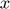
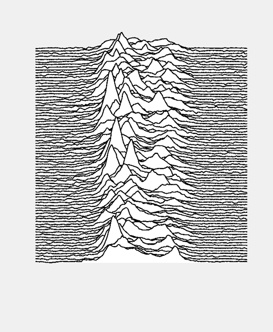
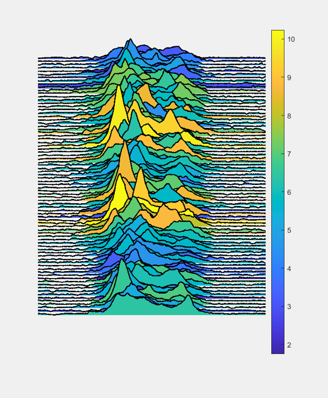
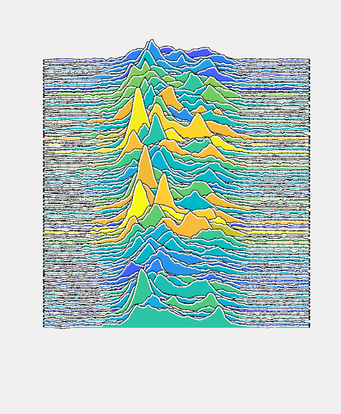
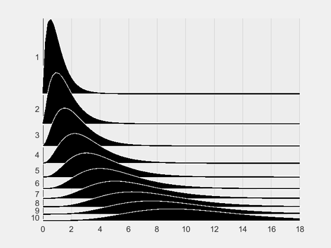
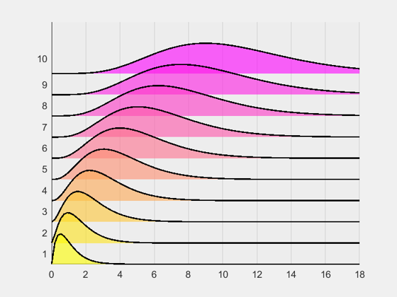
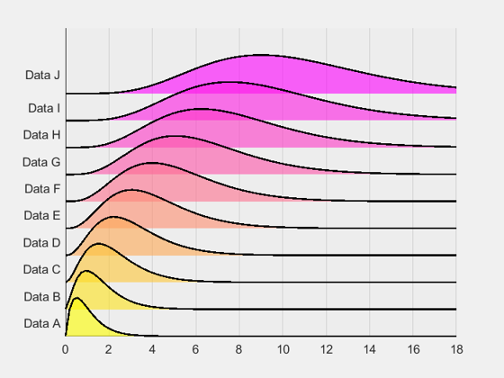
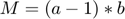
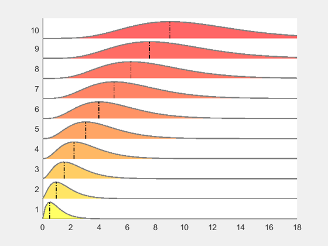
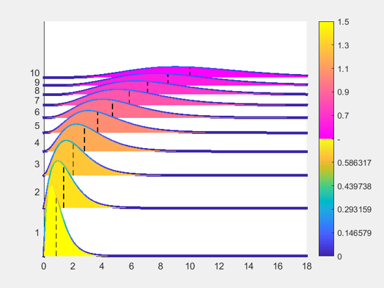

joyPlot documentation
The joyPlot function plots your data in a ridgeline representation, just like in the cover of Joy Divisions' Unknown Pleasures (and in many other newspapers, journals, etc.). The function is very simple and only uses the MATLAB® built-in functions fill and plot. I am actually amazed that this wasn't programmed before, but there you go.
Contents
Syntax
joyPlot(data,x,offset)
joyPlot(data,x,offset,overlapMethod)
joyPlot(data,x,offset,overlapMethod,reverse)
joyPlot(_,Name,Value)
[hf,hl] = joyPlot(_)
[hs,hf,hl] = joyPlot(_)
[hs,hf,hl,hvl] = joyPlot(_)
Description
joyPlot(data,x,offset) Plots the information in the m by n matrix data, where n is the number of datasets and m is the sampling. x is a vector containing the -coordinates of data. offset is the relative vertical distance between datasets. By default, the first row is plotted at the top and the last one at the bottom.
joyPlot(data,x,offset,overlapMethod) If overlapMethod is set to 'variable', offset is the relative overlap in percent between datasets.
joyPlot(data,x,offset,overlapMethod,reverse) If reverse is set to 'true', the first row of data will be plotted at the bottom and the last at the bottom.
joyPlot(_,Name,Value) Specifies patch and line properties using one or more 'Name,Value' pairs. For a list see Properties below.
[hf,hl] = joyPlot(_) Returns the patch and line handles.
[hs,hf,hl] = joyPlot(_) If the stroke is requested, its handle can be returned as well.
[hs,hf,hl,hvl] = joyPlot(_) If additional vertical lines are plotted, their handles can be returned too.
Examples
Joy Division's Unknown Pleasures album cover by Peter Saville
You can find online a LOT of information about this, so here is a link if you want to read the back story. I found the dataset (or at least a similar one) online. More details here and here .
% Save the data from the web filename = websave('pulsar.csv',['https://gist.githubusercontent.com/borgar/',... '31c1e476b8e92a11d7e9/raw/0fae97dab6830ecee185a63c1cee0008f6778ff6/',... 'pulsar.csv']); % Import it into MATLAB(R) data = readmatrix(filename); x = linspace(0,93,size(data,2)); % Create the figure and show the magic figure joyPlot(data',x,4) set(gcf,'position',[500,100,560,680]) set(gca,'Visible','off', 'box','off','XTick',[],'YTick',[])
Add some customization
Don't get me wrong, I don't think that this piece of art needs any more color, detail or anything. But for the sake of showing off the algorithm let's add some options.
% Add face colors as a function of the mean value of each dataset figure joyPlot(data',x,4,'FaceColor',mean(data,2)) set(gcf,'position',[500,100,560,680]) set(gca,'Visible','off', 'box','off','XTick',[],'YTick',[]) % Add a colorbar to show the propertiy value colorbar
One last example with this data set: change the line color and add a stroke. Why anyone would do something like this is beyond me, though.
figure joyPlot(data',x,4,'FaceColor',mean(data,2),'StrokeColor','k','LineColor','w') set(gcf,'position',[500,100,560,680]) set(gca,'Visible','off', 'box','off','XTick',[],'YTick',[])
Plot some distributions
Let's face it, we are not goint to plot interesting things like that pulsar. Let's go with some simple distributions. I will use this example to show how to reverse the data representation and use variable offset of the datasets.
% Create the datasets from normal distributions % Number of datasets n = 10; % Sampling N = 100; % Min and max values in x xmin = 0; xmax = 18; x = linspace(xmin,xmax,N); % Allocate a matrix to store the datasets and medians, data = zeros(N,n); medians = zeros(1,n); % Create the distributions and the data with changing shape and scale. % Save the median for later use distName = 'gamma'; a = linspace(2,7,n); b = linspace(0.5,1.5,n); for ii = 1:n dist = makedist(distName,'a',a(ii),'b',b(ii)); data(:,ii) = pdf(dist,x); medians(ii) = dist.median; end figure % Set overlapMethod to 'variable' and reverse to 'true'. joyPlot(data,x,0.4,'variable',false,'FaceColor','k','StrokeColor','w') % Some axes settings set(gca,'Color',[0.93 0.93 0.93]) set(gca,'XGrid','on')
Change the color of the stroke as a function of the height
This is achieved with the stroke of the diagram and therefore the line has to be hidden. This is the case because the stroke is created with a patch. See more details in the documentation. The 'FaceColor' value has to be set to 'interp'.
figure % For more clarity, 'LineColor' was set to 'none' joyPlot(data,x,0.3,'variable',true,'FaceColor','k',... 'StrokeColor','interp','LineColor','none') % Some axes settings set(gca,'Color',[0.93 0.93 0.93]) set(gca,'XGrid','on') % Change the colormap, you know, for fun. colormap(jet) colorbar

Other useful combinations
If the overall shape of a distribution is important but its maximum value isn't, normalizing the data is the way to go. We will use the same dataset as before, but we will normalize it.
% Normalize the data dataN = normalize(data,1,'range'); % Plot with the position as color figure joyPlot(dataN,x,0.3,'variable',true,'FaceColor','position','FaceAlpha',0.6) % Some axes settings set(gca,'Color',[0.93 0.93 0.93]) set(gca,'XGrid','on') % Change the colormap, you know, for fun. colormap(spring)
Other possibility is to change the y-axis labels
% Create a char array with alphabet alph = 'ABCDEFGHIJKLMNOPQRSTUVWXYZabcdefghijklmnopqrstuvwxyz'; % Formatting ylbls = sprintfc('Data %c',alph(1:n)); % Apply yticklabels(ylbls)
Modify plots after creation
We will also add modal indicators. For the gamma distribution the mode is computed like this: 
% Compute the modes M = (a-1).*b; % Insert them in the joyPlot and return the handles of all objects % By defining the offset as a negative number with overlapMethod % 'variable', the plots now are apart. figure [hf,hl,hvl] = joyPlot(dataN,x,-0.2,'variable',true,'FaceColor',M,'VLines',M); % Change the colormap colormap('autumn') % Now change the vertical line style set(hvl,'LineStyle','-.') % And the line color set(hl,'Color',[0.5,0.5,0.5]) % And the face alpha set(hf,'FaceAlpha',0.6) % And you could keep going with all possible patch and line methods.
Use everything at the same time
Why not? In the following example we will be showing 3 different properties of the curves simultaneously: the median, the scale and the local density value.
% Note that I removed the handle to the line because I set LineColor to % 'none'. figure [hs,hf,hvl] = joyPlot(data,x,0.3,'variable',true,'FaceColor',b,... 'VLines',medians,'StrokeColor','interp','LineColor','none'); cbar = colorbar;

Notice how the lines do not change colors with the height? That is because we are using the same colormap for both the face and the edge. In MATLAB® it's impossible to use two maps for an axis, so we have to go with a workaround. Find more information here.
% Split the colormap colormap([parula(64);spring(64)]); % Get the CData of the strokes sCData = cell2mat(get(hs,'CData')'); % Change the values of the stroke CData sCDataN = reshape(normalize(sCData(:),'range'),size(sCData)); % Set the new CData in the handle set(hs,{'CData'},num2cell(sCDataN',2)) % Get the CData of the faces fCData = cell2mat(get(hf,'CData')); % Change the values of the faces CData. The 1e-4 value is there to assure % that the two datasets do not overlap. fCDataN = normalize(fCData,'range') + 1 + 1e-4; % Set the new CData in the handle set(hf,{'CData'},num2cell(fCDataN,2)) % Set the axis of the colorbar caxis([min(sCDataN(:)) max(fCDataN(:))]) % Change the labels slabels = num2cell(linspace(min(sCData(:)),max(sCData(:)),6)); flabels = num2cell(linspace(min(fCData(:)),max(fCData(:)),6)); cbar.TickLabels = [slabels(1:end-1),'-',flabels(2:end)];
Name-Value Pair Arguments
Specify optional comma-separated pairs of Name,Value arguments. Name is the argument name and Value is the corresponding value. Name must appear inside quotes. You can specify several name and value pair arguments in any order as Name1,Value1,...,NameN,ValueN.
- 'FaceColor': works just like the color in the patch function. It additionally accepts the input 'position', which colors the faces according to the position in the y-axis.
- 'FaceAlpha': works just like 'FaceAlpha' in the function patch.
- 'LineColor': works just like the color of function plot.
- 'LineWidth': works just like 'LineWidth' in the function plot.
- 'StrokeColor': adds a stroke to each dataset with the specified color. Here, the color works just like in the funciton patch.
- 'StrokeWidth': adds a stroke to each dataset with the specified width. Again, this works like in the function patch.
- 'VLines': adds vertical lines in each dataset corresponding to the x-coordinates provided. This is useful to plot median, mean or mode values for example.
- 'VLinesColor': works just like the color of function plot.
- 'VLinesWidth': works just like 'LineWidth' in the function plot.
See also
plot, patch, fill
About
Programmed by Santiago M. Benito at the Chair of Materials Technology of the Ruhr-Universität Bochum.